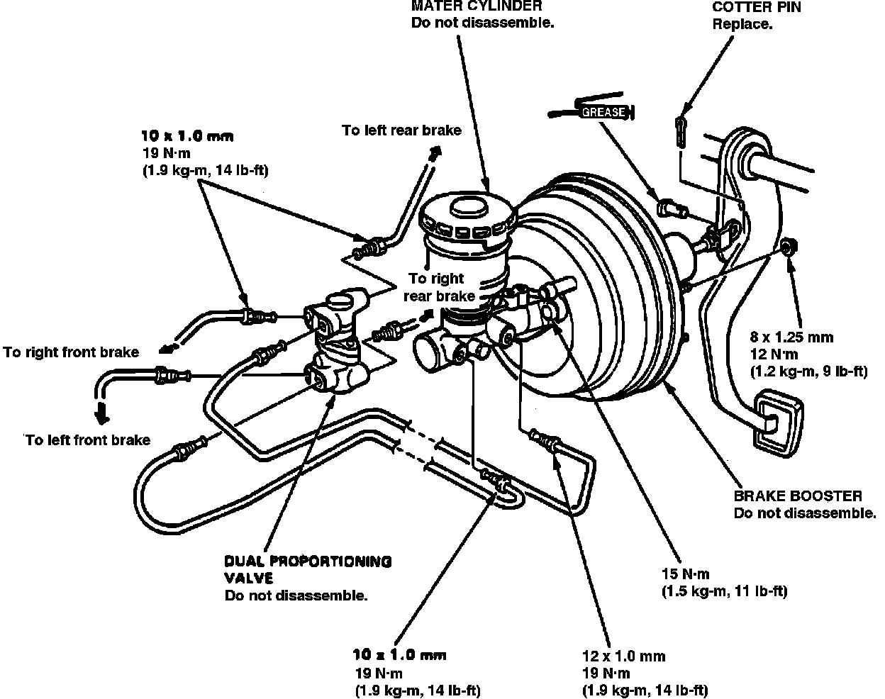
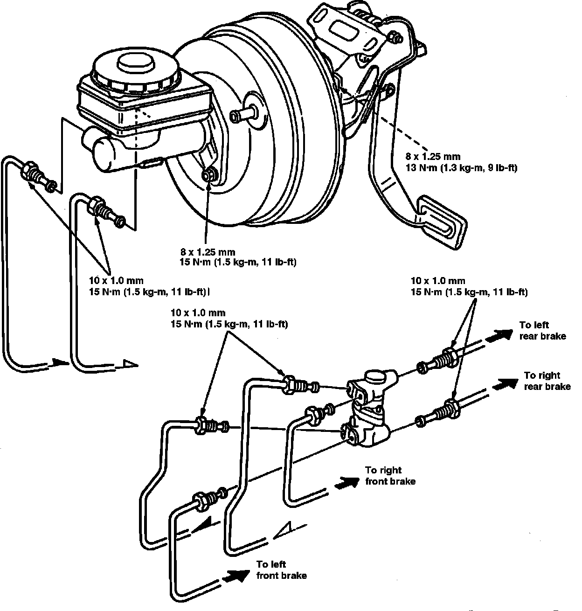
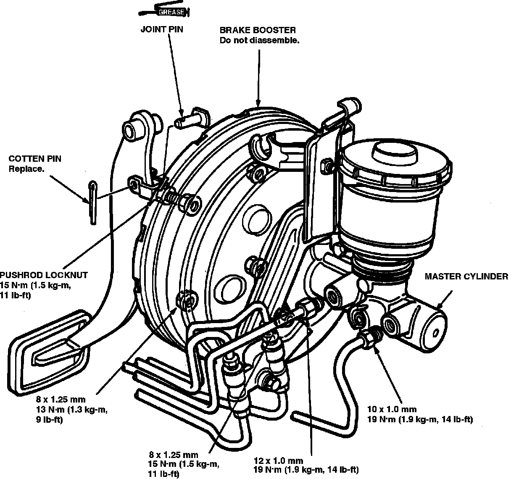

Removal and Installation
Fig. 1 Master Cylinder Replacement:

Fig. 2 Master Cylinder Replacement:

Fig. 3 Master Cylinder Replacement:

1. Disconnect primary and secondary brake lines from master cylinder.
2. Disconnect fluid level sensor electrical connector, if equipped.
3. Remove master cylinder attaching bolts and the master cylinder, Figs. 1 through 3.
4. Reverse procedure to install.